2025-10-14
Garnish your widgets Flexible, dynamic and type-safe composition in Rust
Whilst writing new widgets for Ratatui, a Rust library for cooking up delicious
TUIs (terminal user interfaces)
[Ratatui Developers, 2023]
I experienced some repetitive
coding involving Style and Block which Ratatui widgets typically use to configure
the colors, padding, border and title of a widget. The inclusion of Style
and Block in every widget leads not only to repetitive code but also to complexity and inflexibility.
Composition is the Rust way. But what should be composed of what? When composing two items, say a block and a widget, widget can contain block (as in Ratatui), block can contain widget or a new type can be created containing both.
An additional pain point in the Ratatui API (version 0.29.0) is
that after setting a Block you lose access to it, making it impossible to check or modify Block after
construction. I don’t see good reasons for changing the visibility of public
items, it’s inconvenient and not user friendly.
To scratch the itch, I wrote a library that doesn’t require widgets to contain
Style and Block or even know about them. As a consequence, it makes it easier
to write widgets and new ways to modify widgets: ratatui-garnish
[Laranja, F., 2025-1]
.
It uses a flexible,
dynamic and type-safe composition pattern for Rust. I found the result interesting
and so wrote this article about it. I hope you find it interesting too!
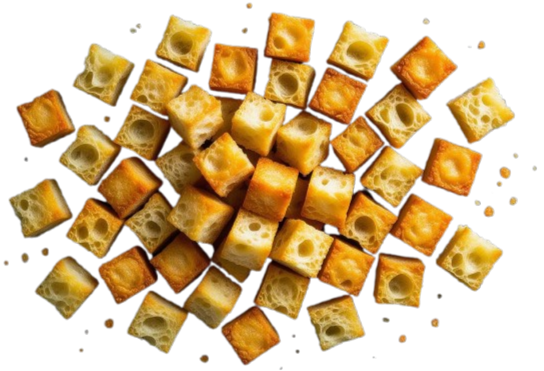
Widgets, Styles and Blocks
A widget in Ratatui is something that implements one of the Widget traits
Widget, WidgetRef or stateful versions of those. Widget’s render
method simply calls render_ref() and then eats your widget, how rude! So
lets look at the implementation of WidgetRef. Many of Ratatui’s widgets
follow this template:
pub struct WidgetFoo<'a> {
/// A block to wrap the widget in
block: Option<Block<'a>>,
/// Widget style
style: Style,
// widget specific fields
}
impl WidgetRef for WidgetFoo<'_> {
fn render_ref(&self, area: Rect, buf: &mut Buffer) {
buf.set_style(area, self.style);
self.block.render_ref(area, buf);
let inner = self.block.inner_if_some(area);
self.render_widget_foo(inner, buf);
}
}
Of course, Style and Block are used in several other methods, such
as in the constructor new and the setter for Block. But
Block and Style act the same in each widget, is it necessary
to repeat this code? In addition Block has its own Style,
I assume that the widget needs it own version of Style is because Block
is optional, but when Block is used the Style of a widget
can be defined in two places. I suspect Block has grown, it
acquires more features as the alternative is to change all the
widgets. Is it a block? What is it?
Let’s analyze the rendering of a widget. Style and Block are handled first,
they both run some code before the widget is rendered, and Block changes the
area parameter for the widget, but they don’t change any other aspect
of the widget.
What happens when we turn the composition inside out, include
widgets in Block, the second composition way?
struct Block<'a> {
widget: Box<dyn WidgetRef>,
// other Block fields
}
impl WidgetRef for Block<'_> {
fn render_ref(&self, area: Rect, buf: &mut Buffer) {
buf.set_style(area, self.style);
self.render_block(area, buf);
let inner = self.inner_area(area);
self.widget.render_ref(inner, buf);
}
}
So Block becomes a wrapper of a widget, it
modifies the input and/or the output of the contained widget. As
it is a widget itself, it suddenly becomes possible to add two borders
around the widget. Voilà! Now our widgets become like onions:
(Style(Block(Paragraph))).
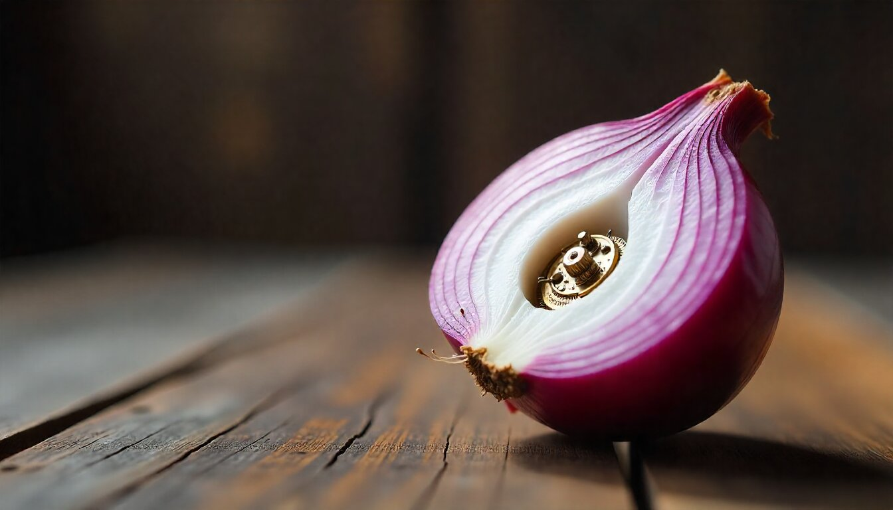
Oh, clever me, I just reinvented the Decorator Pattern:
Decorator
Intent
Attach additional responsibilities to an object dynamically. Decorators provide a flexible alternative to subclassing for extending functionality.
Also Known As Wrapper
[Gamma et al., 1994]
Luckily Rust doesn’t suffer from subclassing, but having a dynamic, flexible way to extend functionality sure is nice to have and is what we need to solve modifying widgets. Indeed the Gang of Four use widgets as an example for the decorator pattern, and I wonder if the name comes from this use.
The gang continues about decorators:
Decorator offers a pay-as-you-go approach to adding responsibilities. Instead of trying to support all foreseeable features in a complex, customizable class, you can define a simple class and add functionality incrementally with Decorator objects. Functionality can be composed from simple pieces.
[Gamma et al., 1994]
Hey, that complex, customizable class, that is the Block
widget, right there! And those simple pieces! Yummy! Gimme, gimme, gimme!
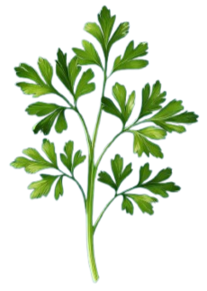
Garnishing
Let’s build decorators for our widgets. As they are Ratatui widgets,
we are not going to simply decorate them, we are going to garnish them.
I’d like to avoid implementing all the variations of the Widget
trait. Here is a trait to modify widgets:
/// A trait that can modify the rendering of a widget.
pub trait RenderModifier {
/// Modifies the widget's rendering area.
///
/// Returns the adjusted area, typically reduced to account for borders, padding, or shadows.
/// Default implementation returns the input area unchanged.
fn modify_area(&self, area: Rect) -> Rect {
area
}
/// Executes before the widget is rendered.
///
/// Used for pre-rendering effects like setting background styles or drawing shadows.
/// Default implementation does nothing.
fn before_render(&self, _area: Rect, _buf: &mut Buffer) {}
/// Executes after the widget is rendered.
///
/// Used for post-rendering effects like drawing titles over borders.
/// Default implementation does nothing.
fn after_render(&self, _area: Rect, _buf: &mut Buffer) {}
}
Basically the RenderModifier trait provides three ways that a garnish can
modify the render methods. The first two come from the current use of Style
and Block in rendering widgets. The last method, after_render, is new.
That is not something the Block widget does. Can you think of a useful
Garnish that renders after the widget has been rendered?
Now garnishes (decorators) are easier to write, they only have to implement one
of RenderModifier’s functions. These functions
are hooks that can be used to modify the render functions of
the Widget traits. So it is a way to compose traits and a bit like
composing functions in functional programming. Here is
a JavaScript function composition example:
const compose = (f, g) => x => f(g(x))The composition of two functions returns a new function. This makes perfect sense: composing two units of some type (in this case function) should yield a new unit of that very type. You don’t plug two legos together and get a lincoln log. There is a theory here, some underlying law that we will discover in due time.
[Frisby, F., 2025]
Well, with traits this is a bit different as they exist in combination with a struct or enum. Applying Frisby’s logic, when composing structs we should use the third way of composition: returning a new unit of that very type (in this case struct).
Garnished Widgets
One struct to rule them all,
One struct to find them …
Hopefully the third way will solve some of the problems of the traditional decorator pattern has that I’ve not mentioned. For example their recursive nature makes accessing or modifying the widget and garnishes hard. You’ll find a comprehensive comparison of the patterns below.
Can we create a new type that wraps the widget and the garnishes,
instead of including one in the other?
Can we create a struct that both wraps the widget and a collection
of garnishes? With this struct we would be able to easily access
all applied garnishes. If we use a vector we would have all of its
extensive and well known methods to access and modify our garnishes.
And as this new type also combines the Widget traits with RenderModifier
we would only need to implement the relevant methods of RenderModifier
for each garnish. I would like something like:
pub struct GarnishedWidget<W> {
widget: W,
garnishes: Vec<RenderModifier>,
}
Wait a minute! RenderModifier is a trait! No Vec for you!
Well, we could use trait objects, but you know what happens with them: all your garnishes start looking the same and you can’t tell lemon zest from parsley.
In Chapter 8, we mentioned that one limitation of vectors is that they can store elements of only one type. We created a workaround in Listing 8-9 where we defined a
[Klabnik et al., 2025]SpreadsheetCellenum that had variants to hold integers, floats, and text. This meant we could store different types of data in each cell and still have a vector that represented a row of cells. This is a perfectly good solution when our interchangeable items are a fixed set of types that we know when our code is compiled.
Let’s use an enum, so we don’t lose our garnishes…
I mean types. A disadvantage of enums is
the amount of boilerplate code required. The nodyn crate
[Laranja, F., 2025]
provides a macro that makes using enums for polymorphism easy,
avoids the boilerplate and it also helps with this
polymorphic vector we need for our GarnishedWidget:
use derive_more::{Deref, DerefMut};
nodyn::nodyn! {
#[derive(Debug, Clone)]
pub enum Garnish<'a> {
Style,
Block<'a>,
}
impl is_as;
impl RenderModifier {
fn before_render(&self, area: Rect, buf: &mut Buffer);
fn modify_area(&self, area: Rect) -> Rect;
fn after_render(&self, area: Rect, buf: &mut Buffer);
}
/// A `Vec` of `Garnish` for applying multiple garnishes to widgets.
vec Garnishes;
/// A widget that wraps another widget with a vector of garnishes.
///
/// This struct implements `Deref` and `DerefMut` to the inner widget,
/// allowing you to access the original widget's methods while adding
/// garnish functionality.
#[vec(garnishes)]
#[derive(Debug, Deref, DerefMut)]
pub struct GarnishedWidget<W> {
#[deref]
#[deref_mut]
pub widget: W,
}
}
Note: ratatui-garnish also has a stateful version of
GarnishedWidget for StatefulWidget.
The nodyn! macro generates an enum Garnish which we use as an alternative to
trait objects, the variants are the different garnishes we have:
Style and Block. The macro generates the variant names for us, e.g.
Style expands to Style(Style) and implements From<variant> and
TryInto<Garnish> for easy conversions. With the impl as_is
feature nodyn generates methods like is_style and
try_as_style.
let red_garnish: Garnish = Style::default().fg(Color::Red).into();
assert!(red_garnish.is_style());
let red_style = red_garnish.try_as_style_ref().unwrap();
assert_eq!(red_style.fg, Some(Color::Red));
The impl RenderModifier block contains the signatures from the
RenderModifier trait. Using this RenderModifier gets implemented
for Garnish by delegating to the variants.
The line vec Garnishes, creates a wrapper around
a Vec<Garnish> with delegated Vec methods and variant-specific
utilities. It supports flexible insertion via Into<Garnish> and provides
methods like first_style, count_style, and all_style for
variant-specific access. The garnishes! macro is also generated
for easy initialization. Garnishes is useful for garnishing
several widgets with the same garnishes.
The #[vec(garnishes)] attribute instructs nodyn! to turn the
struct that follows into a polymorphic Vec by adding a field
garnishes with the type of Vec<Garnish>. I used the derive_more
crate
[Fennema, J., 2025]
,
to derive Deref and DerefMut. The resulting GarnishedWidget
acts like the widget it wraps and as a Vec of Garnishes as well. Now
we can simply add garnishes by pushing them to the widget.
Although GarnishedWidget is called a widget, it hasn’t got
the traits bro! Let’s add:
impl<'a, W: Widget + Clone> Widget for GarnishedWidget<'a, W> {
fn render(self, area: Rect, buf: &mut Buffer) {
let mut area = area;
for g in &self.garnishes {
g.before_render(area, buf);
area = g.modify_area(area);
}
self.inner.render(area, buf);
for g in &self.garnishes {
g.after_render(area, buf);
}
}
}
impl<'a, W: WidgetRef + Clone> WidgetRef for GarnishedWidget<'a, W> {
fn render_ref(&self, area: Rect, buf: &mut Buffer) {
let mut area = area;
for g in &self.garnishes {
g.before_render(area, buf);
area = g.modify_area(area);
}
self.inner.render_ref(area, buf);
for g in &self.garnishes {
g.after_render(area, buf);
}
}
}
As you can see the after_render()s are executed in the same order
as the before_render()s, which makes it bit easier to reason about than
the recursive struct from the traditional decorator pattern. Let’s finish off
our GarnishedWidget by giving it a constructor, and
as push doesn’t sound like what a chef does to decorate a dish,
lets wrap that and make it chainable:
impl<'a, W> GarnishedWidget<'a, W> {
/// creates a new `garnishedwidget` with a single garnish.
pub fn new<G: Into<Garnish<'a>>>(widget: W, garnish: G) -> Self {
Self {
widget,
garnishes: vec![garnish.into()],
}
}
/// Adds an additional garnish to the widget.
pub fn garnish<G: Into<Garnish<'a>>>(mut self, garnish: G) -> Self {
self.push(garnish);
self
}
}
Instead of composing Style, Block and widgets by including one within another
I created a new struct to combined them all: a flat decorator.
By using a enum instead of trait objects, type erasure is avoided.
This setup is a bit more complex than the traditional decorator, but this
initial complexity and the leverage of traits
makes the subsequent implementation of garnishes a breeze.
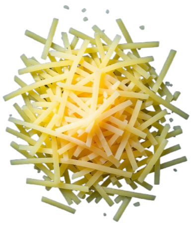
Garnishable Widgets
To make garnishing widgets even easier, I wrote an extension
traits, GarnishableWidget and GarnishableStatefulWidget,
for for the widget traits that adds a garnish method to
any widget. That method turns the widget in a GarnishedWidget
and adds a garnish.
use ratatui::{style::{Color, Style}, text::Line, widgets::Padding};
use ratatui_garnish::{GarnishableWidget, RenderModifier};
let widget = Line::raw("Hello, World!")
.garnish(Style::default().bg(Color::Blue)) // Background for padded area
.garnish(Padding::horizontal(1)) // Padding on left and right
.garnish(Style::default().bg(Color::Red)) // Background for next padded area
.garnish(Padding::vertical(2)) // Padding on top and bottom
.garnish(Style::default().bg(Color::White)); // Background for the line
As you can see with ratatui-garnish, you can easily turn the
three text widgets from Ratatui that don’t contain Block:
Text, Line and Span, into widgets with borders, padding & titles.
Garnishes
Now we start implementing garnishes, in the example above I used Style and Block as
variants of the Garnish enum, so ratatui-garnish offers the same functionality
as Ratatui, we implement Garnish for both:
impl Garnish for Style {
fn before_render(&self, area: Rect, buf: &mut Buffer) {
buf.set_style(area, *self);
}
}
impl<'a> Garnish for Block<'a> {
fn modify_area(&self, area: Rect) -> Rect {
self.inner(area)
}
fn before_render(&self, area: Rect, buf: &mut Buffer) {
self.render_ref(area, buf);
}
}
Block can do lots of things: it has its own Style, it can render a border with
titles and add padding. I like to split this up in lightweight, simpler garnishes,
which can than easily be combined in all kind of ways. Style
we already have. For padding we can use the Padding struct that Block uses:
use ratatui::widgets::Padding;
impl Garnish for Padding {
fn modify_area(&self, area: Rect) -> Rect {
Rect {
x: area.x + self.left,
y: area.y + self.top,
width: area.width.saturating_sub(self.left + self.right),
height: area.height.saturating_sub(self.top + self.bottom),
}
}
}
Note: ratatui-garnish uses its own Padding which is the same as Ratatui’s
but can be serialized and deserialized using default.
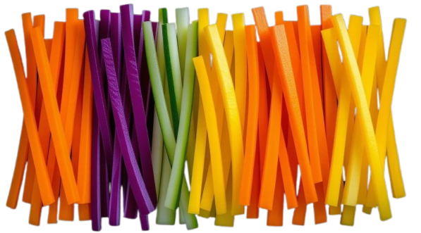
Available garnishes
Instead of Block, ratatui-garnish uses many simple garnishes
to provide similar functionality. As this article’s focus is on
the design pattern used, I won’t go over the implementation of
all garnishes, but give a summary of the garnishes included in
version 0.1.0 (more garnishes are planned).
Borders
- Standard:
PlainBorder,RoundedBorder,DoubleBorder,ThickBorder - Dashed variants:
DashedBorder,RoundedDashedBorder,ThickDashedBorder, - Custom:
CharBorder(single character, e.g.,****),CustomBorder(fully customizable character set) - Specialty:
QuadrantInsideBorder,QuadrantOutsideBorder,FatInsideBorder,FatOutsideBorder
Titles
- Horizontal:
Title<Top>(over top border),Title<Bottom>(over bottom border),Title<Above>(reserves space above),Title<Below>(reserves space below) - Vertical:
Title<Left>(over left border),Title<Right>(over right border),Title<Before>(reserves space left),Title<After>(reserves space right)
Shadows
Shadow(light░, medium▒, dark▓, or full█shades with full-character offsets)HalfShadow(full█or quadrant characters with half-character offsets)
Padding
Padding(spacing around the widget)
Built-in Ratatui Support
Style(background colors, text styling)
Have a look at the
source of ratatui-garnish to look at how easy it is to
implement a garnish, implement one or more of the methods from
RenderModifier, that’s all! And if you wondered about a use of after_render,
have a look at the Title<Top> garnish from the title module, it renders
over the top row of the widget’s area.
Garnishes collection
There are quite a number of garnishes! To make it easy to apply
the same set of garnishes to multiple widgets, ratatui-garnish has a
special Vec<Garnish> called Garnishes. As GarnishedWidget
also acts as a Vec<Garnish> you can use its extend_from_slice
and extend methods to add Garnishes:
use ratatui_garnish::{
GarnishedWidget, GarnishableWidget, RenderModifier,
title::{Title, Top},
border::DoubleBorder, garnishes,
};
use ratatui::{text::Line, widgets::Padding};
use ratatui::style::{Color, Style, Modifier};
let garnishes = garnishes![
Style::default().fg(Color::Blue),
DoubleBorder::default(),
Padding::uniform(2),
Style::default().fg(Color::White),
];
let mut widget = GarnishedWidget::from(Line::raw("First widget"));
widget.extend_from_slice(&garnishes);
let mut other_widget = Line::raw("Other widget")
.garnish(
Title::<Top>::styled("Second", Style::default().fg(Color::Green))
.margin(1));
other_widget.extend(garnishes);
I’ve added similar methods to GarnisableWidget for even simpler
construction of GarnishedWidgets:
let widget = Line::raw("First widget")
.garnishes(garnishes![
Style::default().fg(Color::Blue),
DoubleBorder::default(),
Padding::uniform(2),
Style::default().fg(Color::White),
]);
// create another widget with the same garnishes
let other_widget = Line::raw("Other widget")
.garnishes_from_slice(widget.as_slice());
All garnishes and Garnishes can implement Serialize and
Deserialize from serde
[Tryzelaar & Tolnay, 2025]
(enable the serde feature in your Cargo.toml). This makes it easy to
implement theme support for your TUI applications!
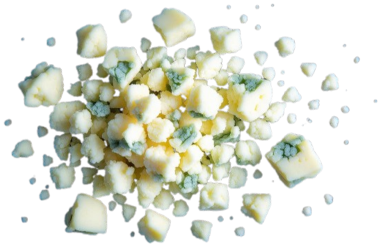
Recipes
Here are some examples with screenshots of what you can do with ratatui-garnish. I only show the garnishes used, the complete code can be found in the examples directory in the github repo.
Padding
This example shows a combination of Style and Padding
garnishes on a ratatui::text::Line widget.
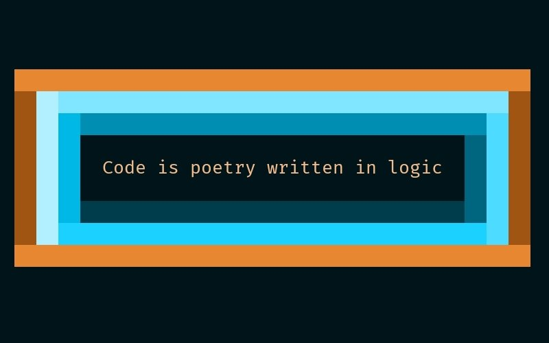
garnishes![
Style::default().bg(ORANGE400),
Padding::vertical(1),
Style::default().bg(ORANGE600),
Padding::horizontal(2),
Style::default().bg(BLUE100),
Padding::left(2),
Style::default().bg(BLUE200),
Padding::top(1),
Style::default().bg(BLUE300),
Padding::right(2),
Style::default().bg(BLUE400),
Padding::bottom(1),
Style::default().bg(BLUE500),
Padding::left(2),
Style::default().bg(BLUE600),
Padding::top(1),
Style::default().bg(BLUE700),
Padding::right(2),
Style::default().bg(BLUE800),
Padding::bottom(1),
Style::default().bg(BLUE900),
Padding::top(1),
Borders
You can add any combination of borders to a widget, in this
example it is again a ratatui::text::Line.
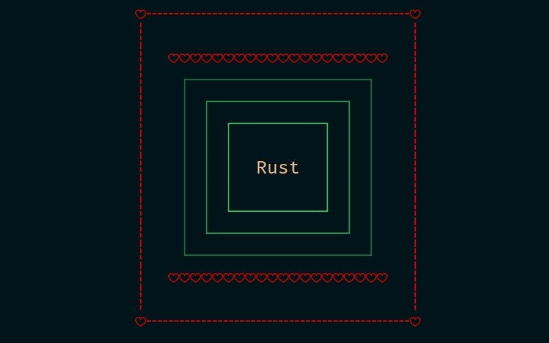
garnishes![
Style::default().fg(Color::Rgb(220, 0, 0)),
CustomBorder::new(BorderSet::dashed().corners('♥')),
Padding::proportional(1),
CharBorder::new('♥').borders(Borders::TOP | Borders::BOTTOM),
Padding::horizontal(1),
Style::default().fg(GREEN700),
PlainBorder::default(),
Padding::horizontal(1),
Style::default().fg(GREEN600),
PlainBorder::default(),
Padding::horizontal(1),
Style::default().fg(GREEN500),
PlainBorder::default(),
Padding::top(1),
];
Titles
This example shows the title garnishes, notice the difference between titles that reserve space (the triangles) and those that render over the border.
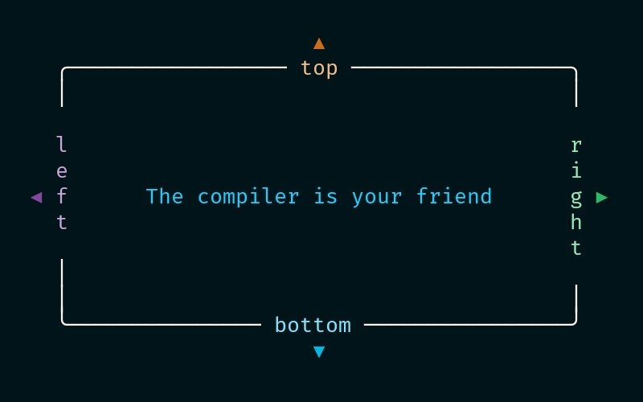
garnishes![
Title::<Above>::styled("▲", Style::default().fg(ORANGE500)).centered(),
Title::<Below>::styled("▼", Style::default().fg(BLUE500)).centered(),
Title::<Before>::styled("◀", Style::default().fg(PURPLE500)).centered(),
Title::<After>::styled("▶", Style::default().fg(GREEN500)).centered(),
Padding::horizontal(1),
Title::<Top>::styled(" top ", Style::default().fg(ORANGE200)).centered(),
Title::<Bottom>::styled(" bottom ", Style::default().fg(BLUE200)).centered(),
Title::<Left>::styled(" left ", Style::default().fg(PURPLE200)).centered(),
Title::<Right>::styled(" right ", Style::default().fg(GREEN200)).centered(),
RoundedBorder::default(),
Padding::top(4),
];
Shadow
Here we add a Title::<Above> and a HalfShadow to a
ratatui::widgets::Paragraph widget.
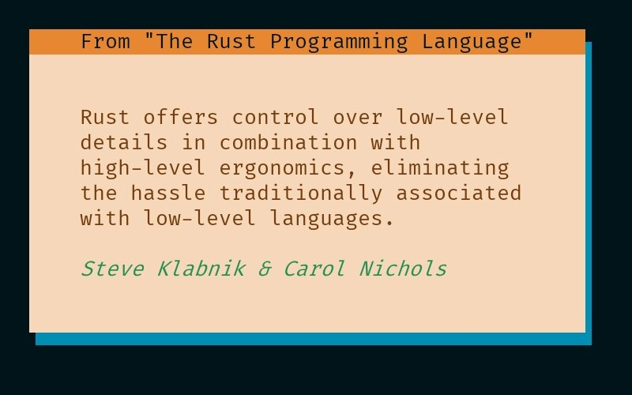
garnishes![
Style::default().fg(BLUE600),
HalfShadow::default(),
Title::<Above>::styled(
"From \"The Rust Programming Language\"",
Style::default().bg(ORANGE400).fg(BLUE900)
).centered(),
Style::default().bg(ORANGE100).fg(ORANGE700),
Padding::proportional(2),
];
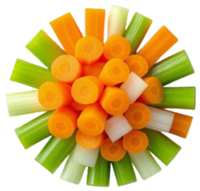
Desigining components for flexible composition
Separating functionality into simple components, just like
with functions, makes it composition easier and flexible.
For the flat decorator I separated the composition functionality
from both the widgets (The Ratatui way) and the garnishes
(Traditional decorators) into a new type GarnishedWidget,
simplifying both.
For the next section which compares the different composition patterns, I wanted to run some benchmarks but I didn’t want to write traditional decorators. Instead I wrote a new type that mimics traditional decorators but uses garnishes:
#[derive(Debug, Deref, DerefMut)]
pub struct DecoratedWidget<W, G> {
#[deref]
#[deref_mut]
pub widget: W,
pub garnish: G,
}
It implements Widget and has a function decorate that wraps
itself into a new DecoratedWidget with the garnish provided.
The GarnishableWidget widget extension trait also provides
a decorate function.
use ratatui::{style::{Color, Style}, text::Text}};
use ratatui_garnish::{
border::PlainBorder,
title::{Title, Top},
GarnishableWidget, Padding,
};
let benchmark_widget = Text::raw("Hello World!")
.decorate(Style::default().fg(Color::Red).bg(Color::White))
.decorate(Title::<Top>::raw("Paragraph").margin(1))
.decorate(PlainBorder::default())
.decorate(Padding::horizontal(2));
Flexibility is great! Now I can run some benchmarks that only
compare the two composition patterns as the widgets and
garnishes are exactly the same. It’s also easier to improve the
ergonomics of this pattern as functions only need to be added to
DecoratedWidget and not to every decorator.
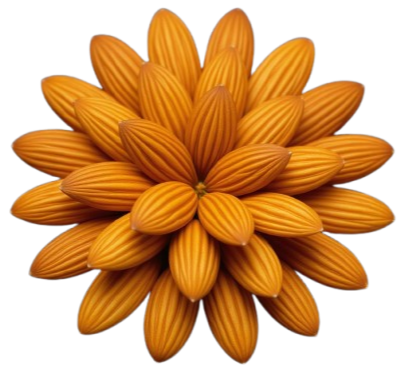
Composition patterns compared
In this article we looked at three ways of composing types in
Rust: the Ratatui way of including decorators (Style and
Block) directly in widgets, the traditional decorator pattern
which includes widgets in decorators, and the flat decorator
which combines a widget with decorators in a new type.
The description of each approach includes
an example diagram of the type based on the Ratatui Paragraph widget, as the
decorator patterns don’t need to include Style and Block the
examples use an imaginary type WrappedText with Style and
Block removed. To simplify the diagrams the field types Option
and Vec do not include these structs but their
contained types. These fields are
indicated with the type in parenthesis after the field name and a colored bar
in front of the field. Generics and trait objects, which are
similarly marked¸ have concrete types. Primitives are
dark orange, structs are blue, enums green and tuples purple.
I have included benchmark statistics for each approach created
with criterion [Apericio & Heisler, 2025]
running on a Kirin 710 using Rust 1.90 stable. The decorator patterns used a
Text widget with similar decorators
as used to construct the Paragraph widget for the Ratatui way
benchmark. The benchmark is for creating the widget with garnish
and rendering to a Ratatui Buffer. You can find the benchmark
code in the benches directory of the ratatui-garnish repo,
including a benchmark comparing the traditional and
flat decorators with varying garnishes which results I’ve not
included.
The Ratatui way
-
blockBlock
-
titles
-
Position
-
Line
-
-
titles_styleStyle
-
titles_alignmentAlignment
-
titles_positionPosition
-
bordersBorders
-
border_styleStyle
-
border_setborder::Set
-
styleStyle
-
paddingPadding
-
-
styleStyle
-
wrapWraptextTextscrollScrollalignmentAlignment
Ratatui widgets embed an optional
Blockand aStyleto handle borders, padding, titles, and styling. As these concrete types are included directly this approach is performant and type safe. However, this approach leads to to repetitive code, increased complexity (have a look at the code of the Ratatuiblockmodule), and poor maintainability, as adding new decorations requires modifying every widget or changingBlock. It is also inflexible, decorations like borders and padding are rendered in a fixed sequence. The poor developer ergonomics are made worse by makingBlockprivate within widgets. Support for functionality like scrolling and other widget interactions is hard to do this way, and support for this in Ratatui is minimal or non-existent.Benchmark Statistics
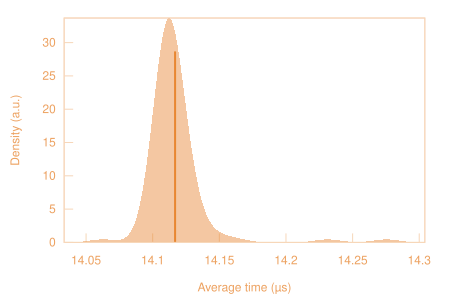
Lower bound Estimate Upper bound Slope 14.112 µs 14.114 µs 14.116 µs R² 0.9999534 0.9999555 0.9999528 Mean 14.113 µs 14.117 µs 14.122 µs Std. Dev. 9.8292 ns 22.885 ns 33.877 ns Median 14.111 µs 14.113 µs 14.114 µs MAD 5.3554 ns 8.2944 ns 10.455 ns
Traditional Decorator
- style fields...
-
fgColor
-
bgColor
-
underline_colorColor
- add_modifierModifier
- sub_modifierModifier
-
widgetPadding
-
leftu16
-
rightu16
-
topu16
-
bottomu16
-
widgetWrappedText
-
wrapWraptextTextscrollScrollalignmentAlignment
-
In Rust the decorator pattern consists of a trait, objects implementing the trait and wrappers (decorators) modifying the trait. The decorators typically use either generics [Snoek, I., 2023] or trait objects [lpxxn, 2025] and [Green Tea Coding, 2025] , to wrap the objects. The diagram shows an example using trait objects, the diagram for decorators using generics would lead to a similar recursive pattern.
Depending on the number of decorators and widgets used, generics can lead to an explosion of structs, increased compile times and bigger code. With trait objects however you get type erasure, and a heap allocation for each widget or decorator. For a more comprehensive comparison see [Drysdale, D., 2024] , [Gjengset, J., 2022] and [Blandy et al, 2021] .
The performance of decorators using generics would be better than those using trait objects. Maintainability is better than the Ratatui way, although in the case of Ratatui decorators you need to create a version for regular and stateful widgets, with each needing two traits (
WidgetandWidgetRef). Flexibility is also better as decorators can be added in any number and order desired. The developer ergonomics are mixed. Accessing or modifying inner decorators or the widget is cumbersome due to the recursive chain, and when using trait objects for wrapping even worse due to type erasure. When using generics type signature becomes unwieldy, e.g.Style<PlainBorder<Padding<Paragraph>>>.In the previous section I described alternative approach for implementing traditional decorators in Rust using generics for the decorator part too. I used that to generate the benchmarks. It also simplifies implementing decorators.
Benchmark Statistics
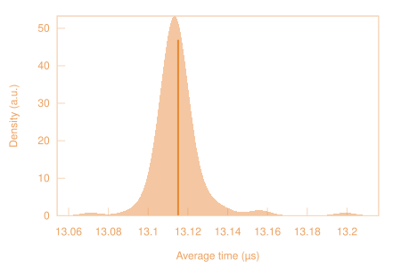
Lower bound Estimate Upper bound Slope 13.112 µs 13.113 µs 13.114 µs R² 0.9999858 0.9999865 0.9999858 Mean 13.113 µs 13.115 µs 13.118 µs Std. Dev. 7.7846 ns 13.318 ns 18.658 ns Median 13.112 µs 13.114 µs 13.115 µs MAD 3.6286 ns 6.0591 ns 7.2340 ns -
Flat Decorator
-
widgetWrappedText
-
wrapWraptextTextscrollScrollalignmentAlignmentgarnishesGarnish
-
StyleStyle
-
PaddingPadding
-
PlainBorderPlainBorder
-
TitleAboveTitle<'a, Above>
-
other variants...
In this article I introduced the flat decorator pattern that I used to write the ratatui-garnish crate. This pattern composes widgets and decorators by wrapping them in a new type (
GarnishedWidgetandGarnishedStatefulWidget). The decorators have their own trait (RenderModifier) which gets combined width theWidgetand friends traits inGarnishedWidget. All decorators are contained within a singleVecusing enum polymorphism. The enum adds a bit of memory overhead and extra logic (variant matching), it is generated using the nodyn macro which increases compilation time. But theVecprovides a familiar and easy API to manipulate the decorators. Thegarnishes!macro andGarnishableWidgettrait offer a fluent API, enhancing developer ergonomics even more. Maintainability is much improved, both for widgets (just like the traditional decorators) but the decorators as well as they don’t need to wrap a widget and only need to implementRenderModifier. Maintaining the new type (GarnishedWidget) is easy thanks to thenodyn!macro.Benchmark Statistics
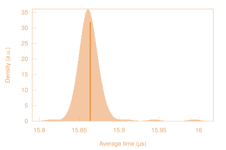
Lower bound Estimate Upper bound Slope 15.860 µs 15.861 µs 15.863 µs R² 0.9999660 0.9999678 0.9999658 Mean 15.861 µs 15.864 µs 15.868 µs Std. Dev. 9.6348 ns 19.040 ns 27.841 ns Median 15.860 µs 15.862 µs 15.863 µs MAD 6.5498 ns 8.4261 ns 10.747 ns -
Performance Analysis
The benchmark results show statistically significant performance differences (non-overlapping 95% confidence intervals) between all three approaches. The traditional decorator is fastest (13.11 µs), followed by the Ratatui approach (14.11 µs, 7.6% slower), with the flat decorator being slowest (15.86 µs, 20.9% slower than traditional). However, these microsecond differences are negligible for typical TUI applications. The flat decorator’s slight performance overhead is a reasonable trade-off for its superior flexibility, maintainability, and ergonomics.
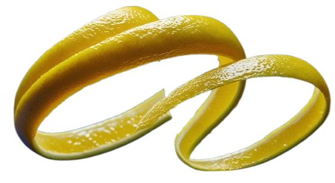
Flat Decorator Pattern
Separation of Concerns Simplifies Everything
The ratatui-garnish library introduces a flat decorator pattern that transforms widget modification in Ratatui, offering a type-safe, flexible, and efficient alternative to the traditional Ratatui approach and recursive decorator patterns.
The pattern resulted from creating a new type to handle the composition. The components in ratatui-garnish, widgets, decorators and composers, have clear roles and handle only what they need to. This results in simpler code which is easier to understand, improving maintainability and facilitates development of new components. The result offers additional benefits: flexibility and great ergonomics. The dynamic nature of this solution can improve many UX features of TUI applications.
When I am writing a library it is often hard to image all different
usage scenarios, and which composition pattern has the
best trade-offs. Splicing the composition functionality into a
new type makes it easy to cater to different needs.
Ratatui-garnish offers the flat decorator GarnishedWidget
for complex and dynamic TUIs and a traditional decorator
DecoratedWidget for when you want a simple TUI, optimized for
speed.
From scratching an itch and simplifying code I came to powerful
tool to streamline widget development and unlock creative
possibilities. Developing new effects, garnishes, is simplified thanks to the
RenderModifier trait. Ratatui-garnish’s fluent API,
exemplified by the garnishes! macro and GarnishableWidget trait,
makes it easy to experiment with complex effects, such as combining
multiple borders, titles, and shadows, as shown in the recipes
section. The use of enum polymorphism via the nodyn! macro
ensures compile-time type safety, while the contiguous Vec
structure simplifies modifications,
addressing the limitations of embedded Style and Block fields
or recursive structures. This pattern not only reduces boilerplate
but also empowers developers to create visually rich TUIs with
minimal effort.
Beyond TUIs, the flat decorator pattern might be useful in other situations that benefit from flexible, dynamic and type-safe composition. For situations where it is not suitable the principle of creating a new type to handle the composition might still apply. I would love to hear about such patterns and new garnishes of course, get in touch!
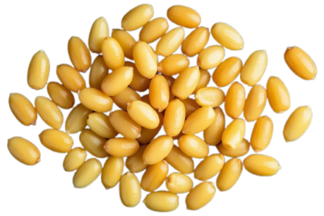
TL;DR
Problem: Ratatui widgets embed Style and Block directly, leading
to repetitive boilerplate, complexity, and inflexibility. You can’t
easily add margins outside borders, stack multiple decorations, or
modify decorations after construction.
Solution: The flat decorator pattern - a new type (GarnishedWidget)
that wraps both the widget and a Vec of decorators (called “garnishes”).
Instead of nesting decorators recursively or embedding them in widgets,
everything lives in a flat structure.
Key Takeaways
1. Separation of Concerns Simplifies Everything
- Widgets: Just render content, no decoration logic
- Garnishes: Just implement
RenderModifier - Composer (
GarnishedWidget): Handles the orchestration - Result: Less code, easier maintenance, clearer responsibilities
2. Practical Benefits
// Easy composition in any order
let widget = Text::raw("Hello")
.garnish(Padding::uniform(2)) // margin
.garnish(Style::default().bg(Blue)) // outer background
.garnish(RoundedBorder::default()) // border
.garnish(Padding::horizontal(1)) // inner padding
.garnish(Style::default().bg(White)); // inner background
// Access and modify garnishes like a Vec
assert_eq!(widget.count_padding(), 2);
widget.remove(0); // Remove first padding
widget.push(Shadow::default()); // Add shadow
// Reuse garnishes across widgets
let theme = garnishes![Style::default().fg(Blue), DoubleBorder::default()];
widget1.extend_from_slice(&theme);
widget2.extend(theme);
3. Broader Applications
The flat decorator pattern isn’t specific to TUIs - it’s useful anywhere you need:
- Flexible, dynamic composition
- Easy access to all composed elements
- Runtime modification of behavior
What You Can Build
With ratatui-garnish you can easily create:
- Themed UIs - Serialize/deserialize garnish sets (serde support)
- Dynamic layouts - Add/remove decorations at runtime based on state
- Rich widgets - Multiple borders, shadows, nested padding, positioned titles
- Reusable components - Share garnish collections across widgets
- Clean custom widgets - No boilerplate for borders/padding/styling
The Bottom Line
By extracting composition logic into a new type and using enum polymorphism instead of trait objects, the flat decorator pattern, with a slight performance overhead, achieves:
- ✅ Flexibility - Compose in any order, any number
- ✅ Type safety - No type erasure, full enum variant access
- ✅ Ergonomics - Fluent API, Vec-like manipulation
- ✅ Maintainability - Clear separation of concerns
Perfect for building sophisticated terminal UIs without wrestling with nested types or losing access to your decorations.
Ready to garnish your widgets?
📦 crates.io/crates/ratatui-garnish
💻 GitHub Repository
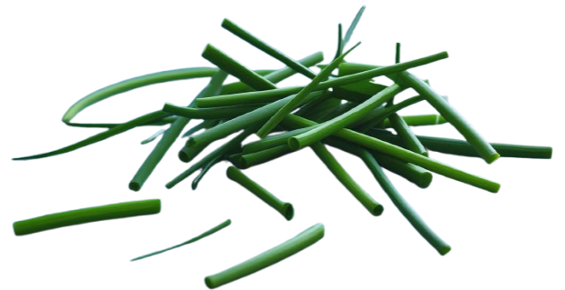
References
-
, 2025. Criterion: Statistics-driven micro-benchmarking library. https://bheisler.github.io/criterion.rs/book/index.html.
-
, 2021. Programming Rust, 2nd edition. O'Reilly Media. [Chapter 11. Traits and Generics]
-
, 2024. Effective Rust: 35 Specific Ways to Improve Your Rust Code. O’Reilly Media. [Chapter 2. Traits]
-
, 2025. Professor Frisby's mostly adequate guide to functional programming. https://mostly-adequate.gitbooks.io/mostly-adequate-guide/. [Chapter 5: Coding by Composing]
-
, 1994. Design Patterns: Elements of Reusable Object-Oriented Software. Addison-Wesley. [Defines the traditional decorator pattern]
-
, 2022. Rust for Rustaceans: Idiomatic Programming for Experienced Developers. No Starch Press. [Chapter 2. Types]
-
, 2025. Flexible Design with the Decorator Pattern in Rust: A Deep Dive. YouTube video, https://m.youtube.com/watch?v=T24b1-n1bRE. [Rust decorator pattern using trait objects]
-
, 2025. The Rust Programming Language. http://doc.rust-lang.org/book/ch18-02-trait-objects.html. [18.2 Using Trait Objects That Allow for Values of Different Types]
-
, 2025. Rust Design Patterns. https://github.com/lpxxn/rust-design-pattern. [Rust decorator pattern using trait objects]
-
, 2023. The Decorator pattern: an easy way to add functionality. https://www.hackingwithrust.net/2023/06/03/the-decorator-pattern-an-easy-way-to-add-functionality/. [Rust decorator pattern using generics]